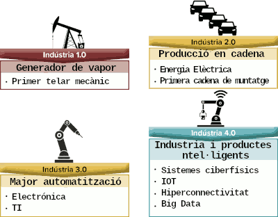

Com va succeir en les revolucions industrials anteriors, quan canvia el paradigma, molts negocis i llocs de treball deixen d'existir per a donar cabuda a negocis i perfils laborals nous.
La introducció i incorporación de noves tecnologies digitals tenen un paper fonamental en l'augment de l'eficiència i també en la millora de la competitivitat en la economia.
La Indústria 4.0 presenta un gran ventall de tecnologies a implantar. Així que com sap un empresari què és el més recomanable per al seu negoci? No ho sap, forma part del risc inherent de qualsevol negoci.
Les THD poden aplicar-se en diverses àrees (existents o de nova creació), entre les que podem trobar:
- Cura de la salut i telemedicina. Les THD s’utilitzen en l’atenció mèdica per al monitoratge remot de pacients, la telemedicina, l’anàlisi de dades de salut, la gestió de registres electrònics de salut i la detecció precoç de malalties. Actualment, la tecnologia permet reduir costos i proporcionar un servei mèdic millorat als pacients. La telemedicina és una indústria en creixement. En el futur serà molt utilitzada.
- Cura personal. Actualment, es demanda tractaments amb substàncies sostenibles i no tòxiques. En la indústria de la cura personal també hi ha preocupació per la preservació de l'entorn, així com per l'ús de productes ecològics.
- Fabricació, Robòtica i automatització. En la indústria manufacturera, les THD s’apliquen en l’automatització de processos de producció, l’optimització de la cadena de subministrament, el control de qualitat, la fabricació additiva (impressió 3D i 4D) i la gestió d’actius. Actualment, en molts sectors, l'automatització és l'únic mode de reduir costos i generar avantatges competitius. A l'automatització se li uneix la IA i l'aprenentatge automàtic.
- Energia i medi ambient. Energies renovables. Les THD s’utilitzen en la gestió intel·ligent de xarxes elèctriques, la monitorització de recursos naturals, l’optimització de l’eficiència energètica i la reducció d’emissions de carboni. Cada vegada existeix major conscienciació sobre l'entorn i la sostenibilitat. Per tant, les energies renovables seran molt importants en el futur, donada l'àmplia demanda. Els organismes governamentals estan intentant conscienciar a la població per a canviar-se a les renovables.
- Desenvolupament de programari i serveis de tecnologia de la informació. Qualsevol empresa o indústria en desenvolupament necessitarà solucions innovadores de programari, aplicacions, serveis tecnològics, cloud computing, IA, blackchain,etc. Est és un dels sectors amb major creixement actual i futur.
- Realitat augmentada i realitat virtual. Aquestes tecnologies han captat l'atenció de moltes indústries, incloent-hi els jocs, l'entreteniment, l'educació, la medicina, el màrqueting, etc.
- Ecomerce i venda en línia. La manera de comprar ha canviat. Les compres en línia estan escalant posicions, en detriment del negoci clàssic. Les THD són essencials per a la gestió de botigues en línia, la personalització de l’experiència del client, el processament de pagaments en línia i el seguiment d’inventari.
- Transport i logística. Les THD s’apliquen en la gestió de flotes, la logística d’entrega, la planificació de rutes i la monitorització de vehicles.
- Vehicles elèctrics i transport sostenible. L'Agenda 2030 aposta pel transport sostenible, i el futur passa pels vehicles elèctrics. Aquest sector està en creixement.
- Desenvolupament de programari i serveis de tecnologia de la informació. Qualsevol empresa o indústria en desenvolupament necessitarà solucions innovadores de programari, aplicacions, serveis tecnològics, cloud computing, IA, blackchain,etc. Est és un dels sectors amb major creixement actual i futur.
- Finances, banca i tecnologia (fintech). Les THD s’utilitzen en la banca en línia, els pagaments digitals, la detecció de fraus, l’anàlisi de riscos i la gestió de carteres d’inversió. Les finances s'han beneficiat de les innovacions, com blockchain, per a millorar els seus serveis financers, com ara els pagaments, els préstecs, les inversions, etc. Aquest sector està en creixement i s'espera que continue evolucionant.
- IA i aprenentatge automàtic. Moltes empreses que aconsegueixen avantatges competitius per als seus productes, serveis, processos, etc, utilitzen IA i aprenentatge automàtic. Els nous algorismes de IA tenen un potencial molt alt quan es tracta d'obtindre avantatges tecnològics la deixe anar termini.
- Educació, Educació en línia i tecnologia de l'educació . Les THD s’apliquen en l’educació en línia, l’aprenentatge automàtic, la personalització del contingut educatiu i l’avaluació automatitzada. És possible estudiar en universitats de prestigi sense haver d'assistir presencialment. L'aprenentatge en línia dona moltes oportunitats no sols als inversors, sinó també a qualsevol persona que vulga preparar-se. L'aprenentatge en línia del futur serà flexible i personalitzat amb eines de realitat virtual i realitat augmentada.
- Govern i Administració Pública. En el sector públic, les THD s’apliquen en la digitalització de tràmits i serveis, la votació electrònica segura i la gestió de dades governamentals.
- Seguretat i defensa. Ciberseguretat. Les THD s’utilitzen en sistemes de seguretat cibernètica, detecció d’amenaces, vigilància avançada, gestió de crisis i comunicacions segures. Atés que tots els negocis es basen en el núvol (cloud) i internet, la necessitat de reduir l'impacte dels ciberatacs i altres amenaces és una cosa prioritària.
- Mitjans i entreteniment. En la indústria dels mitjans, les THD s’apliquen en la transmissió de contingut en línia, la publicitat dirigida, la realitat virtual i augmentada i la creació de contingut digital.
- Biotecnologia i farmacèutiques. Aquest sector està patint una gran transformació, a causa de la tecnologia. El descobriment de nous tractaments mèdics és fonamental per a la societat.
- Treball remot i eines col·laboratives. El treball remot i col·laboratiu és un fet. Per a això, existeixen eines com Trello o Slack.
- Construcció i arquitectura. En la construcció, les THD s’apliquen en el modelatge d’informació de construcció (BIM), la planificació de projectes, el monitoratge d’obres i la gestió d’actius immobiliaris.
- Sector immobiliari. Es veurà beneficiat amb les noves tecnologies. La realitat virtual permetrà als compradors gaudir per endavant d'una reforma o un nou desenvolupament.
- Moda sostenible. La moda ha sigut un dels sectors més contaminants dels últims temps. Els consumidors ara procuren triar opcions més sostenibles i ètiques que fa anys.
- Benestar. Inclou fitnes, salut mental, meditació, autocura, etc.